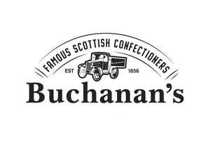

Trade Mark Journal No.2025/037 12 September 2025
UK00004251929 20 August 2025 (29,30)

- Class 29
- Drinks made from dairy products; milk drinks; milk based drinks [milk predominating]; milk beverages; flavoured milk drinks; flavoured milk powder for making drinks; fruit flavoured beverages having a milk base; milk beverages containing fruit; milk shakes; mixed milk beverages; milk substitutes; plant-based milk substitutes; non-dairy milk substitutes; jellies; jams; compotes; fruit and vegetable spreads; spreads consisting mainly of fruits; spreads consisting mainly of eggs; hazelnut spreads; cheese spreads; vegetable-based spreads; dairy spreads; nut-based spreads; legume-based spreads; fruit jelly spreads; low-fat dairy spreads.
- Class 30
- Non-medicated confectionery; biscuits, biscuits; cereal preparations; breakfast cereals; sugar confectionery; bakery products; cookies; sweets, candies; all of the aforesaid being produced in Scotland; chocolate and cocoa-based beverages; buns, cakes; chocolate, both raw and manufactured; cocoa and cocoa products; ice cream; edible ices; frozen yoghurt; frozen confectionery; essences and flavourings for foodstuffs; puddings; sauces; pastries; chewing candy; chewing gum; lozenges, liquorice; sherbets, sorbets; sweetmeats; chocolate spreads; chocolate-based spreads; chocolate spreads containing nuts; cocoa-based creams in the form of spreads; sweet spreads [honey]; mayonnaise and ketchup-based spreads.
Golden Casket (Greenock) Limited
Representative: Murgitroyd & Company